Uma laguna enorme com uma única porta para o mar. Aqui está a Lagoa dos Patos de verdade: a barra de Rio Grande, o farol, uma foca que virou símbolo de cidade e os peixes que vivem onde a água doce encontra a salgada.
A Lagoa dos Patos fica no Rio Grande do Sul e é a maior laguna do Brasil: cerca de dez mil quilômetros quadrados, mais de duzentos quilômetros de comprimento, entre a região de Porto Alegre e a cidade de Rio Grande. Uma faixa estreita de dunas separa a lagoa do Atlântico, e só existe uma ligação com o mar: o canal da barra de Rio Grande.
É por esse canal que a água do mar entra e se mistura com a que vem dos rios. A parte estuarina, perto da barra, tem enseadas rasas, cheias de comida e de esconderijo, e por isso funciona como berçário: muito peixe e muito crustáceo do mar entra ali para crescer. Passam de cento e dez as espécies de peixes e crustáceos do estuário, e cinco sustentaram a pesca artesanal por mais de um século: o camarão-rosa, a corvina, os bagres, a tainha e a miraguaia.
A pesca artesanal ainda marca a vida da beira. O pescador costuma ser dono do barco, um bote de cinco a dez metros, e sai com dois ou três parentes ou vizinhos. O ano de pesca tem calendário próprio: o camarão e a tainha no começo do ano, o bagre depois, e a chegada dos grandes cardumes de corvina e de miraguaia para abrir uma nova safra. E o camarão-rosa tem uma rede só dele, o saquinho ou aviãozinho, uma rede fixa que atrai o camarão com luz.
Em 1996 nasceu o Fórum da Lagoa dos Patos, em Rio Grande, que junta 21 instituições da sociedade e do poder público das cidades da beira para cuidar da pesca e da lagoa.
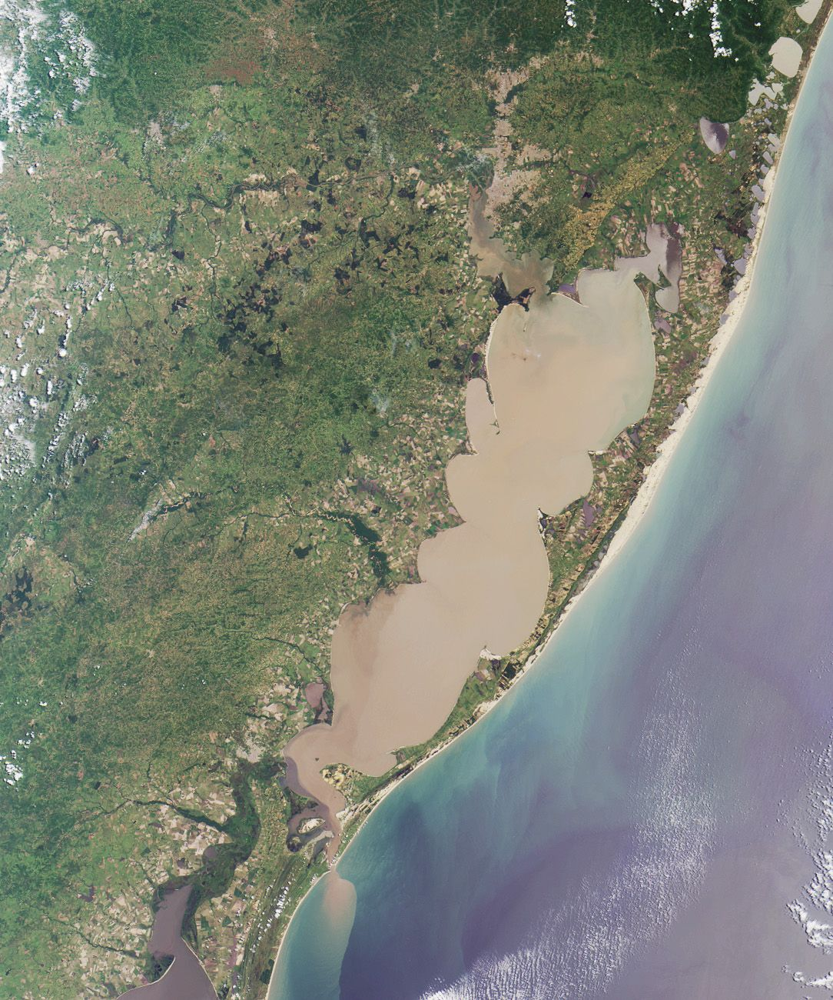
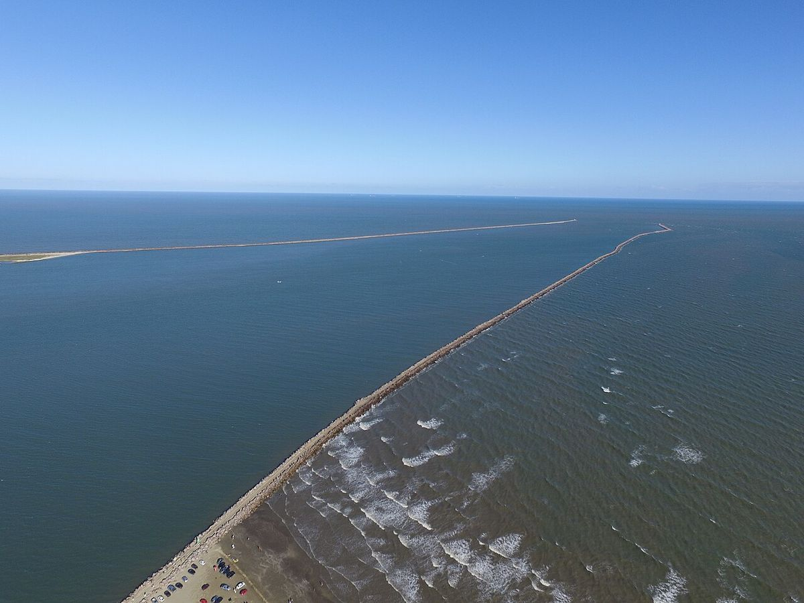
O cenário da Lagoa mistura o que o lugar tem de mais característico: dunas, campo, banhado e a praia dos molhes com o farol.
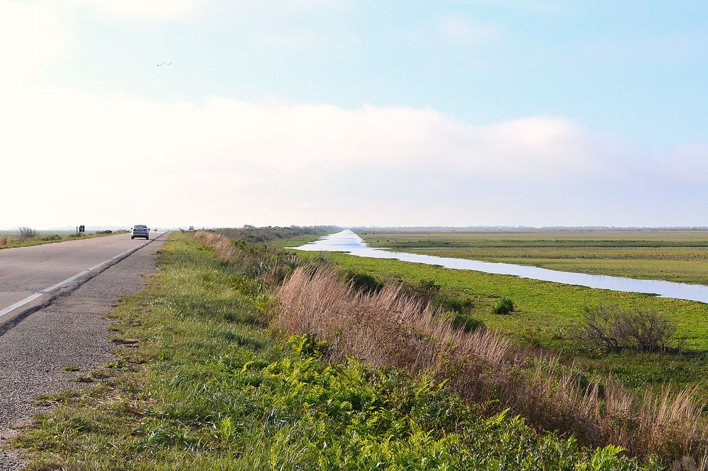
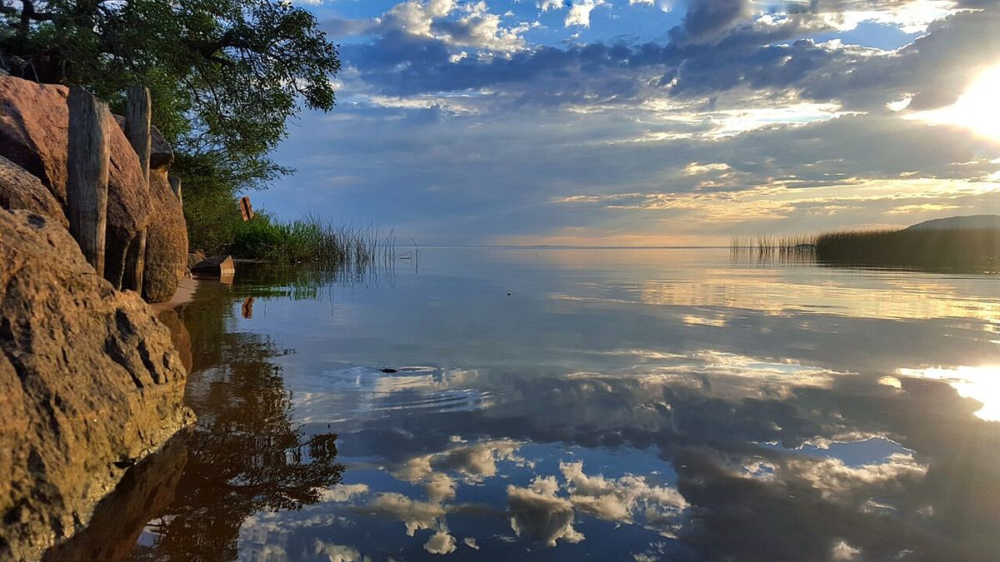
Uma faixa de dunas separa a lagoa do mar. No Molhe Leste, em meio às dunas e à restinga, os pesquisadores registraram o tuco-tuco-das-dunas, um roedor ameaçado de extinção.
O campo aberto é a paisagem do Pampa, no sul do Rio Grande do Sul. No Molhe Leste, entre as aves registradas estão a polícia-inglesa-do-sul e o canário-do-campo.
Terra baixa que alaga e seca com a chuva. O Parque Estadual de Itapuã tem banhados, e no Molhe Leste os pesquisadores encontraram a perereca-pizzicato nos banhados temporários no meio da restinga.
Os molhes e o farol têm uma seção própria mais abaixo: a história da barra de Rio Grande e o Farol de Itapuã, um farol de verdade da lagoa.
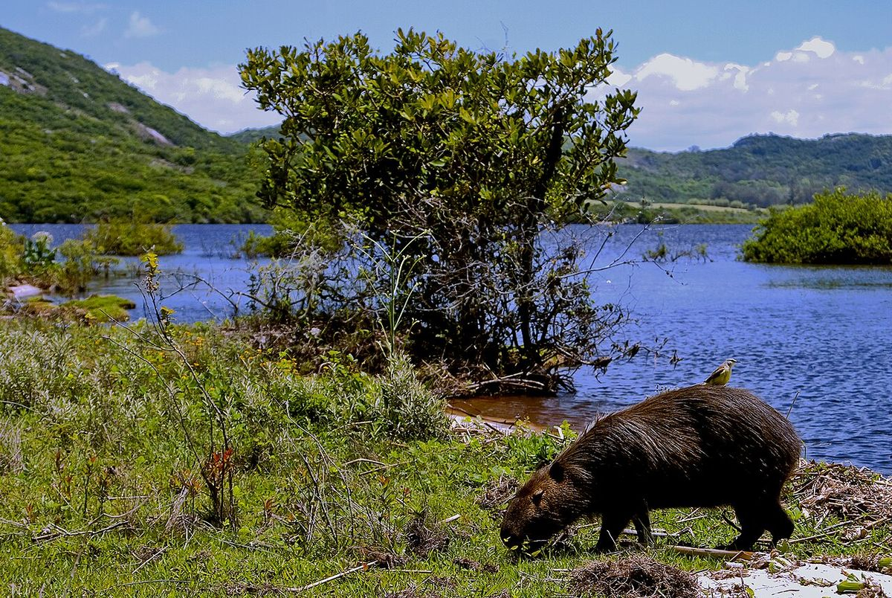
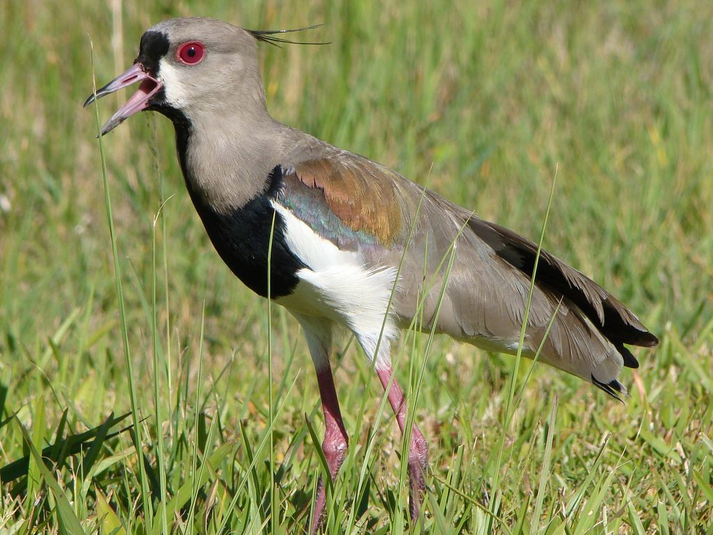
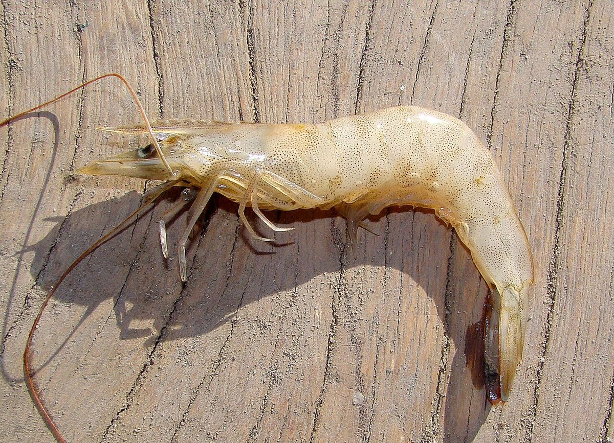
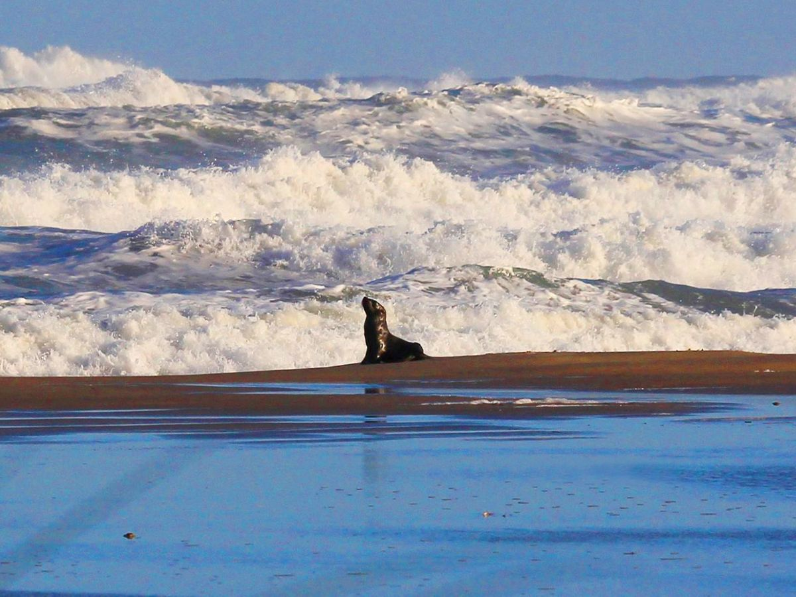
O maior roedor do mundo, e vive perto da água. Aparece nos banhados e nas margens da lagoa, como no Parque Estadual de Itapuã.
Tem um esporão de osso na dobra da asa e faz o ninho num buraco raso raspado no chão. Para afastar quem chega perto, finge estar ferido, e o macho pode partir para bicar.
É o principal recurso da pesca no estuário. A safra depende da salinidade da água, que muda com a chuva: nos anos de muita chuva, a produção de camarão cai.
São o leão-marinho-do-sul e o lobo-marinho-do-sul, dois mamíferos marinhos que descansam no Molhe Leste da barra de Rio Grande. A história deles está na seção dos molhes.
A saída da lagoa para o mar já foi um perigo. Antes de existirem os molhes, o lugar era conhecido pelo acesso difícil e pelo risco de naufrágios, e os moradores o chamavam de "barra maldita". O canal de navegação tinha de dois a três metros de profundidade.
Os molhes, dois paredões de pedra que entram no mar, foram construídos entre 1909 e 1915 para aprofundar o canal. Hoje a barra é um corredor de uns 740 metros de largura entre eles, dragado para manter catorze metros de fundo, e todo bicho do mar que depende do estuário passa por ali.
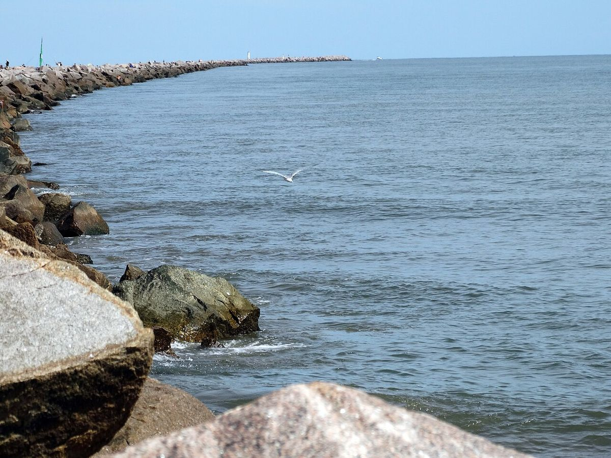
E os molhes têm moradores. Em 1996, São José do Norte criou o Refúgio de Vida Silvestre do Molhe Leste da Barra de Rio Grande, para proteger leões-marinhos e lobos-marinhos que usam a ponta do molhe leste para descansar e se abrigar na rota de migração deles. O refúgio cobre uns mil metros do molhe. Numa contagem de barco em fevereiro de 2019, os pesquisadores viram 38 leões-marinhos dentro dos limites da área.
No norte da lagoa, na Ponta de Itapuã, em Viamão, fica um farol de verdade. O Farol de Itapuã foi concluído em 1860 e marca o encontro das águas do Lago Guaíba com a Laguna dos Patos. Ele fica dentro do Parque Estadual de Itapuã, a cerca de 57 quilômetros de Porto Alegre.
A região guarda também marcas da Revolução Farroupilha, que durou de 1835 a 1845: há vestígios dela no Morro da Fortaleza, na Ilha do Junco e na Ferraria dos Farrapos. No jogo, o farol fica na praia dos molhes.
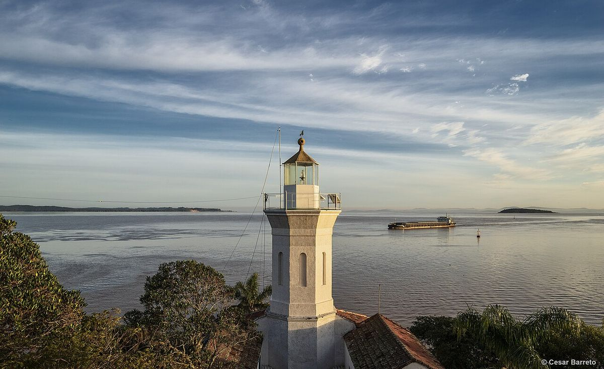
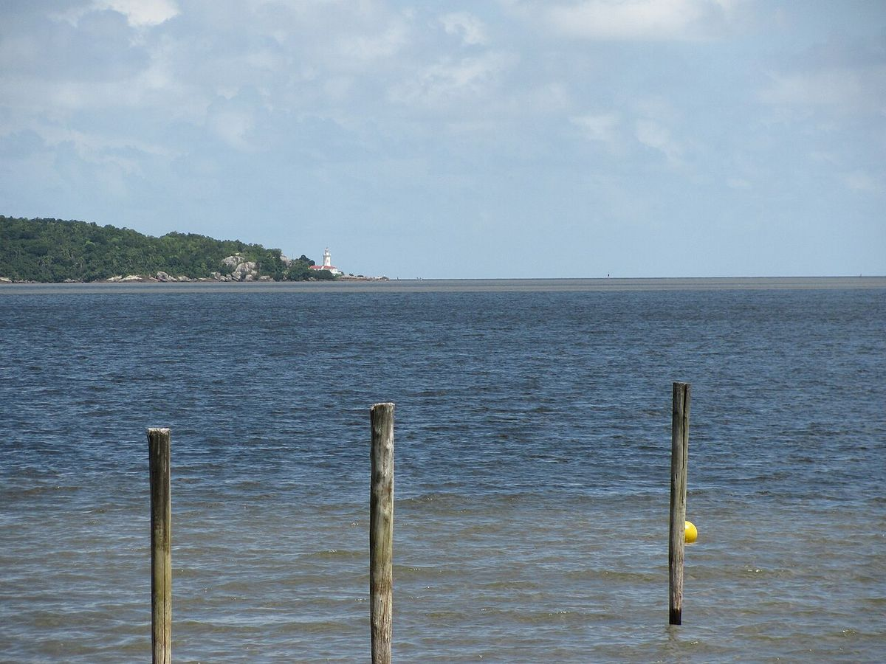
Na margem oeste da lagoa fica Camaquã, e lá mora uma das histórias mais simpáticas da região. Em 1953, quando a Praça Donário Lopes foi inaugurada, dois rapazes, Oly Corleta e Epaminondas Martins, voltaram de uma viagem ao Litoral Sul trazendo uma foca viva num caminhão que chamavam de "fordeco". Foram direto ao gabinete do prefeito, Ney Silva Azambuja, que ordenou: "Coloquem-na no aquário da praça!"
A foca comeu os peixinhos vermelhos que moravam ali e virou a dona do aquário. Atraiu muita gente à cidade e virou mascote dos moradores. Viveu pouco tempo, mas ficou na memória: o aquário passou a se chamar "O Lago da Foca", e a prefeitura pôs no meio dele uma foca de cerâmica marrom-avermelhada, no lugar da original.
A foca de cerâmica virou símbolo do centro de Camaquã. Os carnavais do Clube Camaquense terminavam ali, com o tradicional "banho da Foca Maroca": com orquestra e foliões. O nome só veio em 2011, quando a prefeitura revitalizou a praça. Até então ela era "a Foca da Praça Donário Lopes". A Secretaria de Cultura e Turismo e a de Educação fizeram um concurso entre as escolas, e o nome vencedor foi sugestão de uma aluna do 1º ano da EMEF Dr. Nadir Medeiros, Andriely Santos de Oliveira. A viúva de Oly, Helena Corleta, assistiu à homenagem. O artista Caiaque restaurou a foca na ocasião, e em 2021 ela foi retirada, restaurada de novo por um servidor da prefeitura e devolvida ao lago, que ganhou uma pintura azul mais viva para destacá-la.
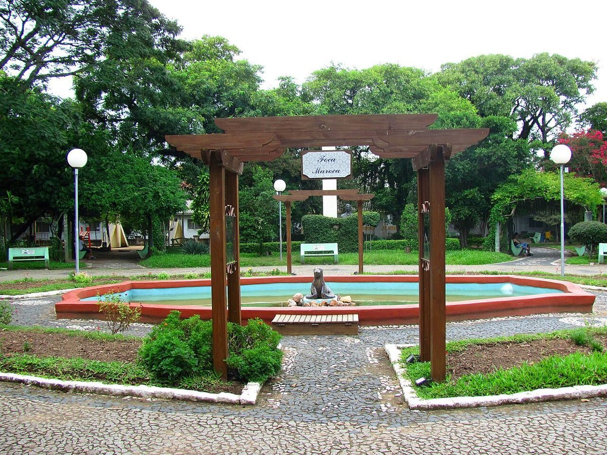
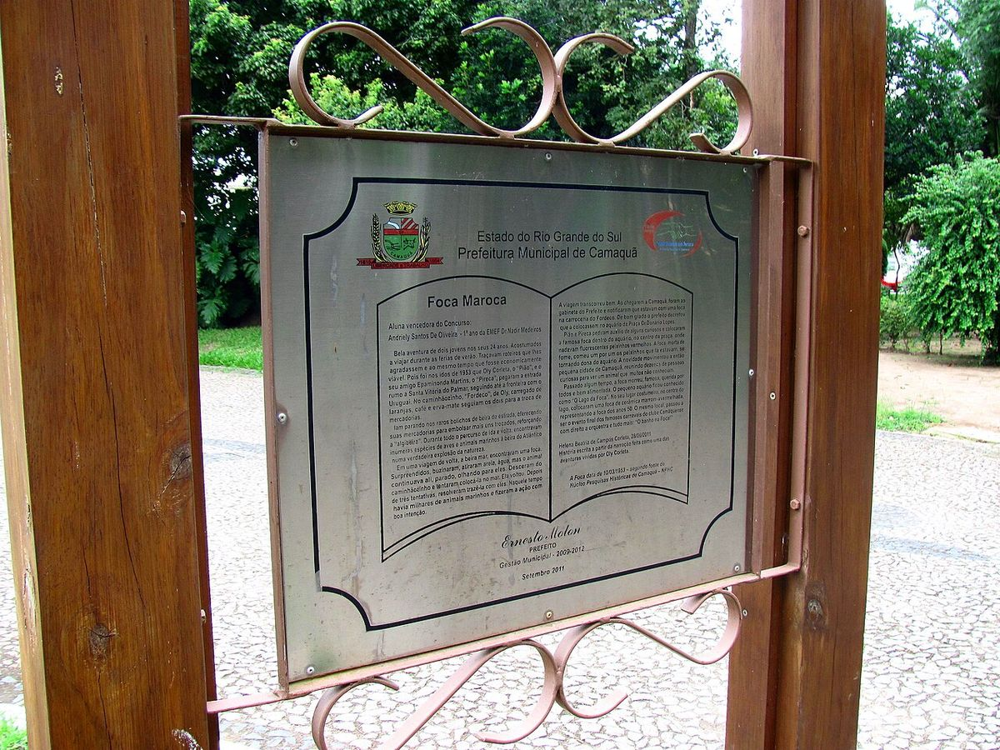
Os doze peixes da Lagoa dos Patos no jogo, de peixe-rei a miraguaia. Quando o nome popular vale para mais de uma espécie, o cartão avisa.
Peixe de corpo comprido e prateado. Uma das espécies, Odontesthes argentinensis, vive no sul do Brasil, na Argentina e no Uruguai, em água salgada, salobra e doce, e passa dos quarenta centímetros. As regras de pesca do estuário já fixaram um tamanho mínimo de vinte centímetros para ele.
Bagre de água doce que vive de noite. De dia fica escondido no fundo de lama, entre folhas e madeira podre, e à noite come de tudo um pouco: peixe, inseto, crustáceo. As nadadeiras têm espinhos com veneno. Vive do México ao centro da Argentina.
Cará, ou acará, é nome de vários peixes da família dos ciclídeos. Um deles, o Geophagus brasiliensis, vive nos rios do leste e do sul do Brasil e do Uruguai, em água doce e salobra. O nome do gênero vem do grego e quer dizer comedor de terra.
Vive em grandes cardumes perto do mar, no estuário, e entra até na água doce. Come detrito e alga. Desova no mar, e a pesca da lagoa seguia o calendário dela: em janeiro, quando os adultos voltam da desova, e na corrida da tainha, entre abril e junho, quando os cardumes saem do estuário para o mar. As ovas, salgadas e secas, são uma iguaria.
Foi o bagre da pesca artesanal da lagoa: a safra ia de agosto ao começo de novembro. Nos anos 1980, com mais rede de emalhe, a pesca de bagre quebrou, e hoje só sobra uma pequena pescaria no alto do estuário, no inverno. Nos textos antigos ele aparece como Netuma barba. Em bagres marinhos parentes dele, como o Genidens genidens, é o macho que guarda ovos e filhotes na boca.
Passa o dia parada na vegetação e fica ativa à noite. O adulto come peixe. A fêmea põe os ovos em covas rasas e o macho guarda o ninho, até depois de os filhotes nascerem. Os dentes são afiados e a boca é forte. Vive da Costa Rica à Argentina.
Vive em fundo de lama e areia, na costa e nos estuários, que são o berçário e a área de comer dela. Os filhotes comem crustáceos pequenos e moluscos, e os adultos, bichos do fundo e, de vez em quando, peixe. Chega a sessenta centímetros. Quando os grandes cardumes chegam, por volta de novembro, começa a safra dela.
Peixe chato que vive no fundo, perto da costa, e entra nas lagoas costeiras. Os estuários são o berçário. O adulto come camarão e caranguejo e passa de oitenta centímetros. Vive do Rio de Janeiro até Mar del Plata, na Argentina.
Vive em águas costeiras, estuários e lagunas, e sobe até a água doce. Desova em água salobra de estuário e come peixe e crustáceo. Passa de setenta centímetros. O Rio Grande do Sul é o limite sul de onde ele vive, e a carne é muito apreciada.
Viola é o nome de raias de focinho comprido, as raias-viola, e mais de uma espécie leva o nome. A Pseudobatos horkelii, o cação-viola, chega a um metro e meio de corpo e era abundante na costa do Rio Grande do Sul até o começo dos anos 1980. Entre 1985 e 1997 a população caiu 85% na plataforma sul, e hoje ela está criticamente ameaçada.
A miraguaia, ou miragaia, ou burriquete, é uma corvina grande, que passa de um metro e vive de caçar no fundo: caramujo, mexilhão, caranguejo. Todo ano os adultos migram para o estuário para desovar. Entre os anos 1950 e 1970 foi pesca de peso na lagoa, chegando a 1.450 toneladas em 1977. Em 1982 a pesca já não compensava, e a espécie entrou em 2014 na lista nacional de ameaçadas, na categoria em perigo.
A Miraguaia-Rainha é invenção do jogo, que a imagina subindo do fundo atraída pela luz de um farol. A de verdade é uma das maiores da família das corvinas. Depois que a pesca quebrou, só se acham dentro do estuário miraguaias de porte pequeno e médio, de uns 28 a 62 centímetros.
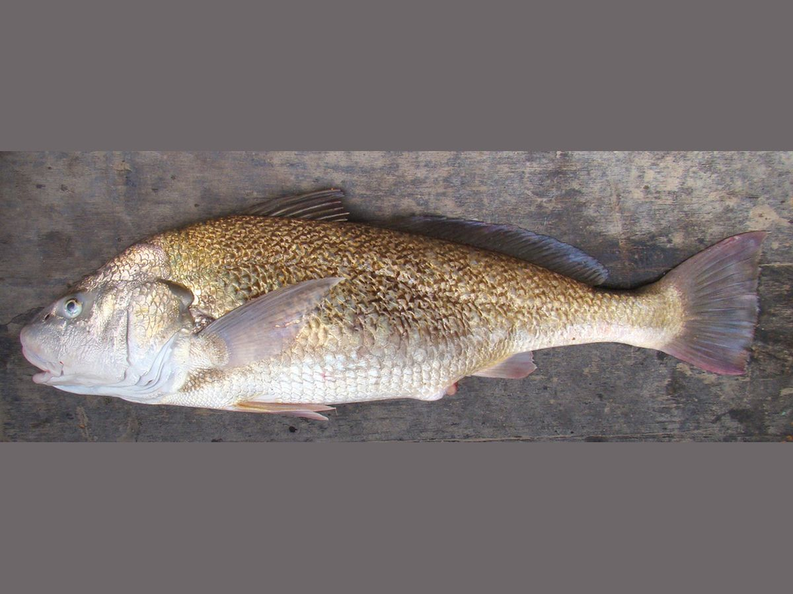
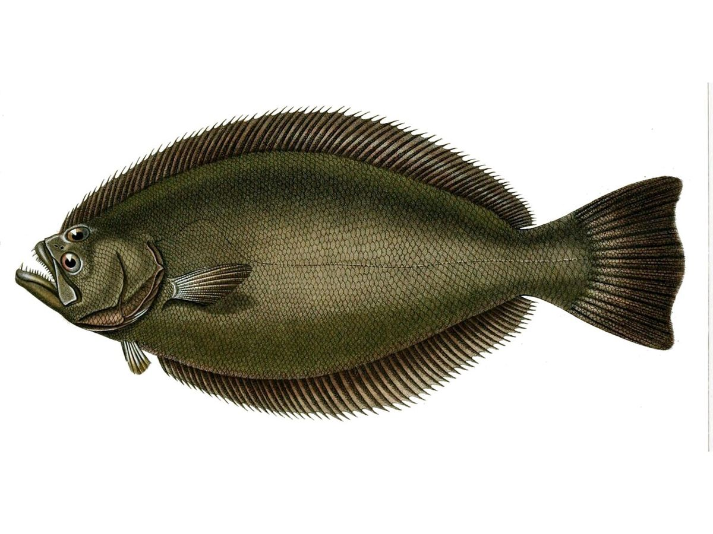
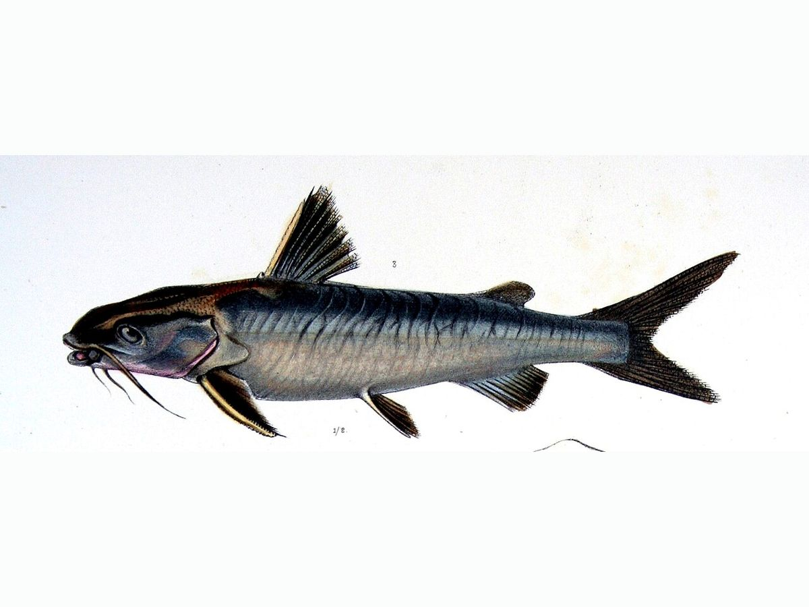
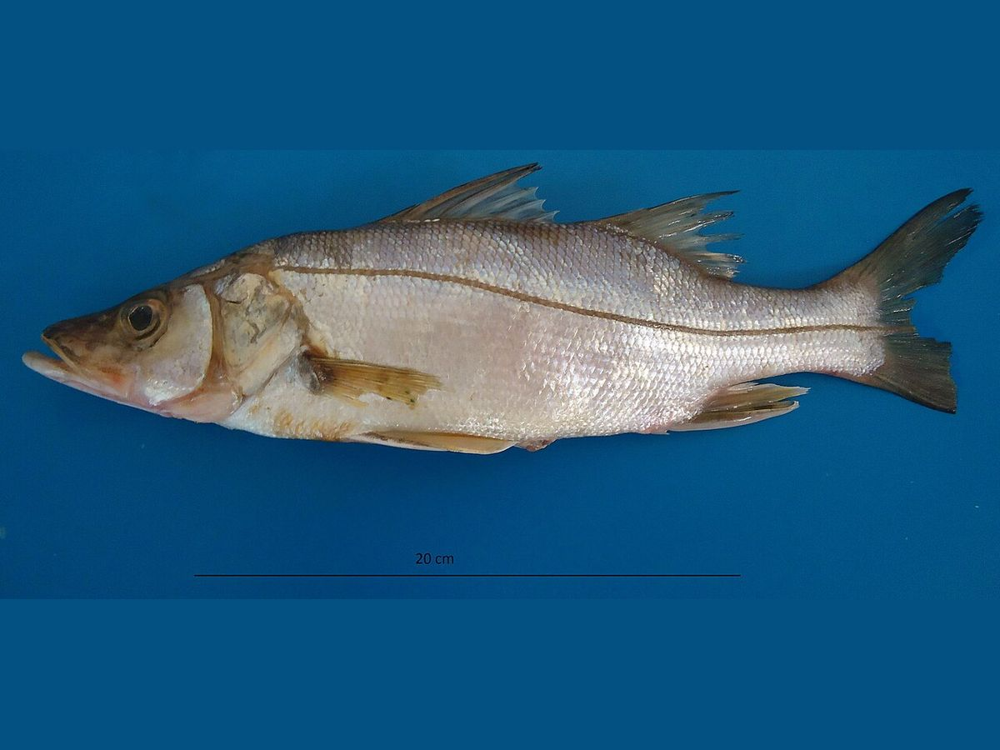
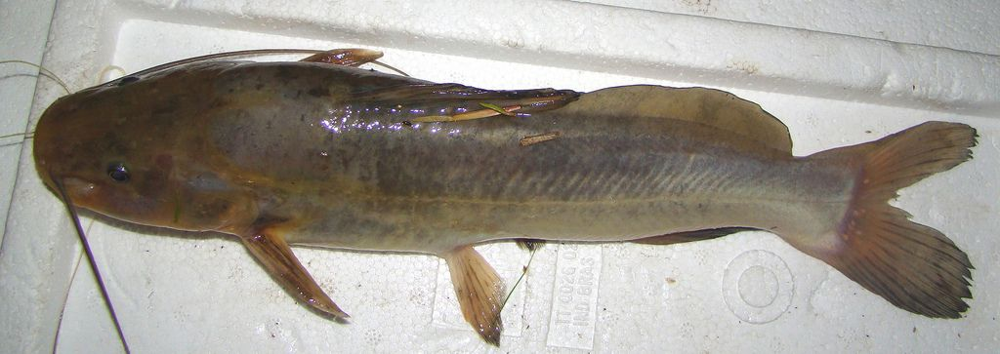
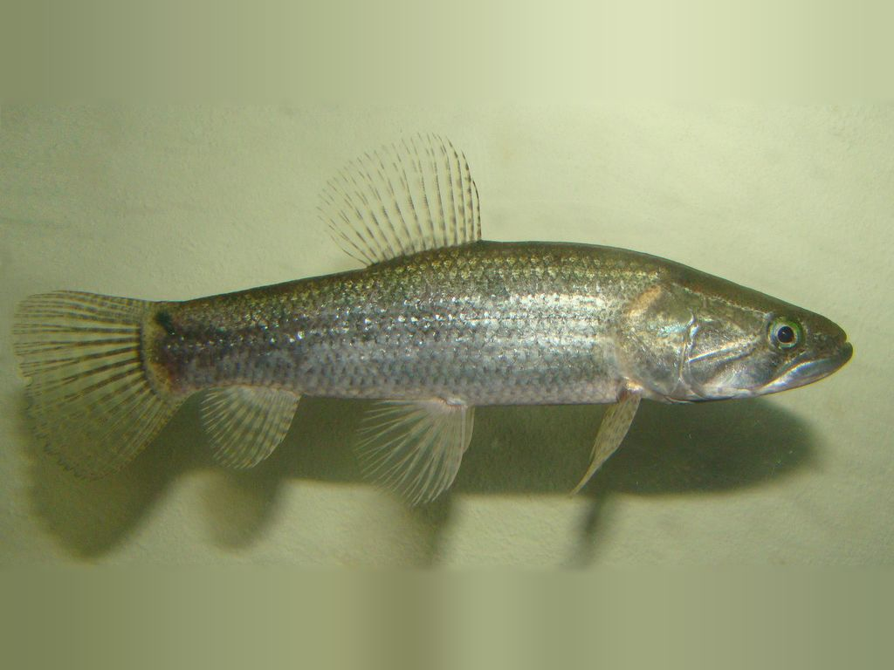
No ponto onde o Guaíba encontra a Laguna dos Patos, em Viamão, fica uma das últimas amostras dos ambientes originais da região metropolitana de Porto Alegre: o Parque Estadual de Itapuã. Ele é uma unidade de conservação de proteção integral, criada para proteger a beleza, a flora e a fauna e os sítios de valor histórico da região, com morros, praias, dunas, lagoas e banhados.
O parque ficou mais de dez anos fechado para os ecossistemas se recuperarem e foi reaberto em abril de 2002. Entre os bichos que ele guarda estão o bugio-ruivo, ameaçado de extinção, a lontra e o gato-maracajá, além de aves migratórias como o maçarico-acanelado. Lá também mora o Farol de Itapuã. E o parque tem centro de visitantes, com exposição de fotos, e palestras para grupos agendados.
Proteger Itapuã é proteger o lugar onde a lagoa começa. Quer conhecer o parque? A página oficial é a da Secretaria do Meio Ambiente do estado: sema.rs.gov.br/parque-estadual-de-itapua. E o Molhe Leste, lá na barra, também tem a sua proteção: o refúgio dos leões e lobos-marinhos.
Quem pesca na lagoa conhece a lição: bagre e miraguaia já quebraram uma vez, e a raia-viola, que enchia a costa do Rio Grande do Sul, hoje está criticamente ameaçada. Por isso a pesca no estuário tem tamanho mínimo e épocas de defeso para cada peixe, definidos junto com os próprios pescadores, e respeitar essas regras é o que garante peixe na safra seguinte.
E o camarão-rosa depende da água: quando a chuva muda a salinidade, a safra muda.
Todas do Wikimedia Commons, com licença que permite uso comercial. Foram reduzidas para a página.


.jpg){kind=link}


_2.jpg){kind=link}